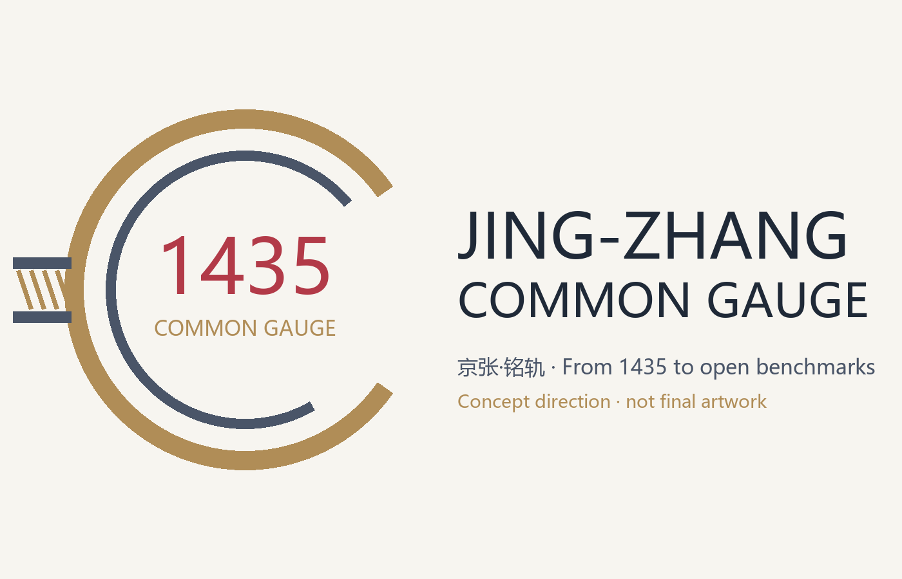
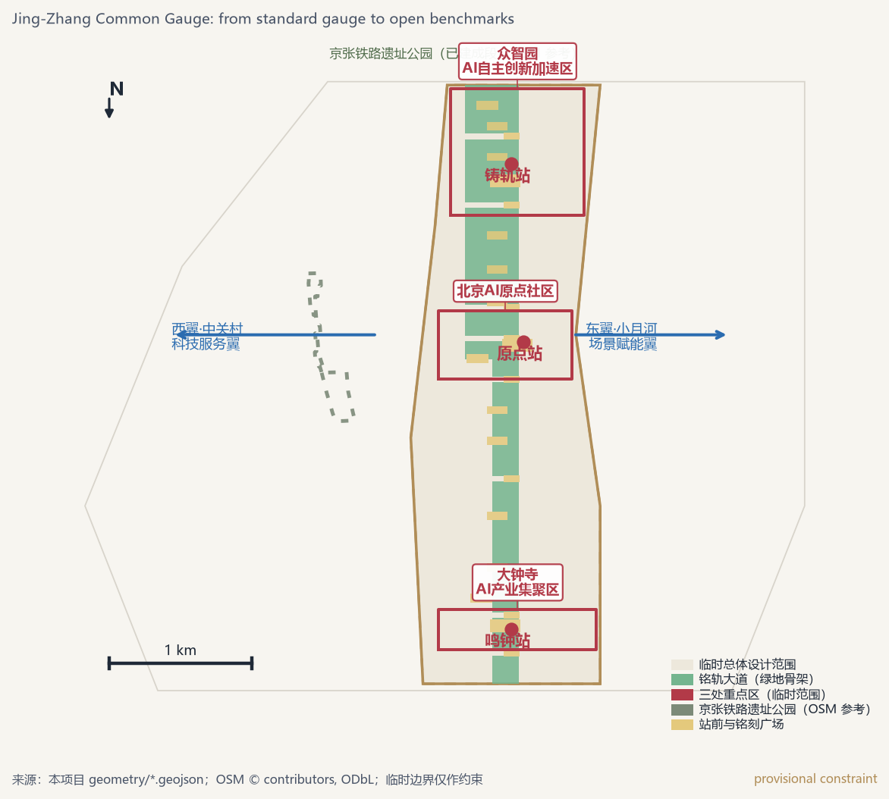
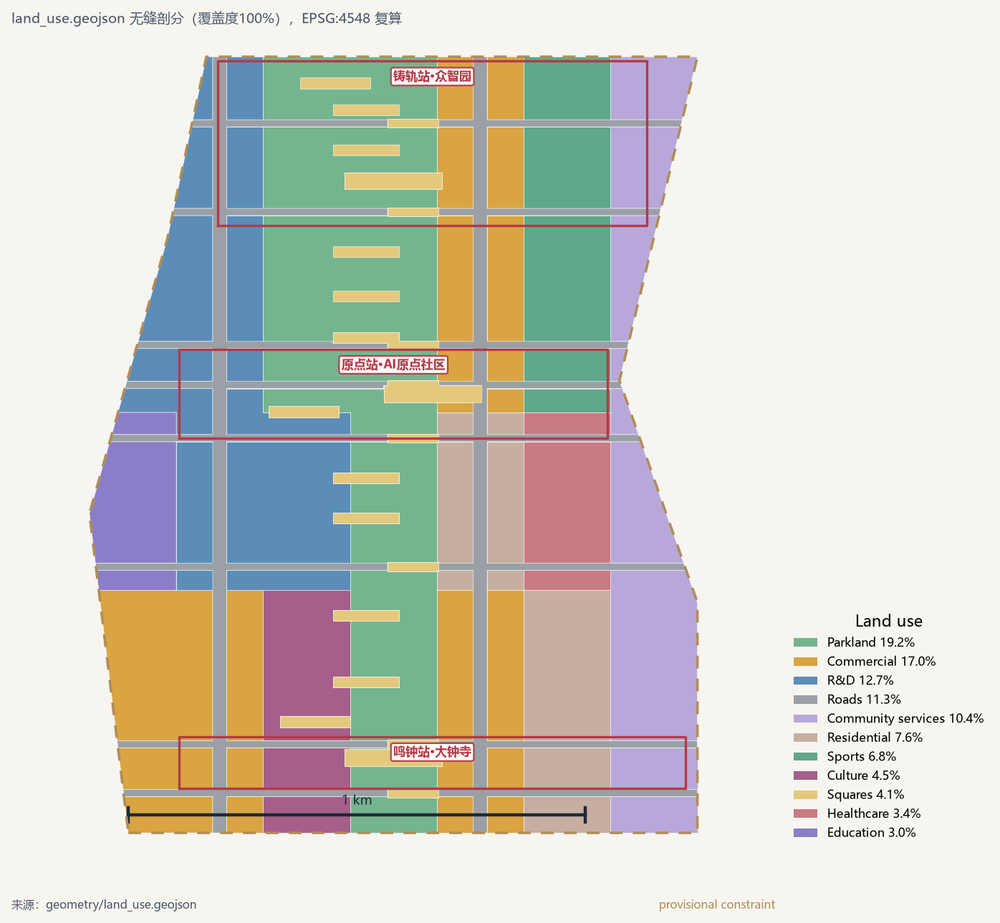
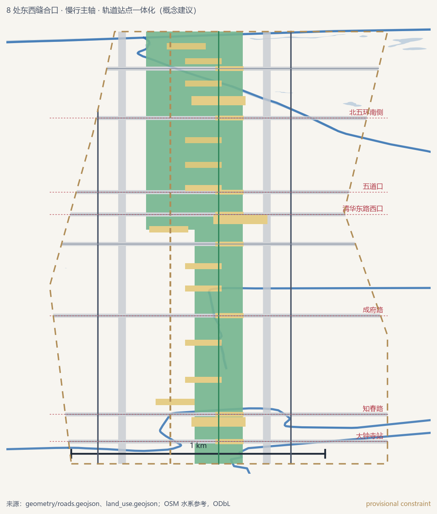
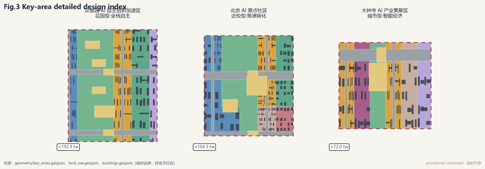

Centennial Jing-Zhang AI Innovation Belt Open Call · Formal Package
JING-ZHANG COMMON GAUGE
From Standard Rail to Open Benchmarks — Conceptual Urban Design
Rooted in the 1435 mm standard gauge of Zhan Tianyou's Jing-Zhang Railway and the 230,000-character inscription of the Yongle Bell, the belt is organized as an Inscribe Line with three stations (Gauge Works / Mile Zero / Bell Yard) and two wings, turning every AI breakthrough into something publicly benchmarked, traceably inscribed, and tangibly operated.
This proposal is a conceptual suggestion, not a statutory plan or government approval. The overall design area and three key areas use the repository's provisional rough boundaries; all layers and metrics will be recalculated once official polygons are released.
Brand and Voice-over

Logo concept direction (not final artwork): open bronze ring + double rails + inscription ticks, 1435 super symbol.
Conceptual voice-over (about 56 seconds, synthetic, no real human voice): transcript
Overview Map
11.41 km²总体设计范围（临时边界复算）
19.2%绿地率
4.1%公共空间比例
11.3%概念建筑密度
11.3%道路用地比例
3重点片区（192.1/104.3/72.0 ha）

Fig.1 Site overview: one spine, three stations
Land-Use Zones

Fig.2 Land-use structure (100% coverage)
Blue-Green Public Space

Fig.4 Mobility and blue-green system
Key Areas

Fig.3 Key-area design index
Renewal Projects
Phase 1: Mile Zero Square, Open-Source Hall of Honor, university-adjacent street
Phase 2: Bell Yard Square, agent street, Dazhongsi station quadrants